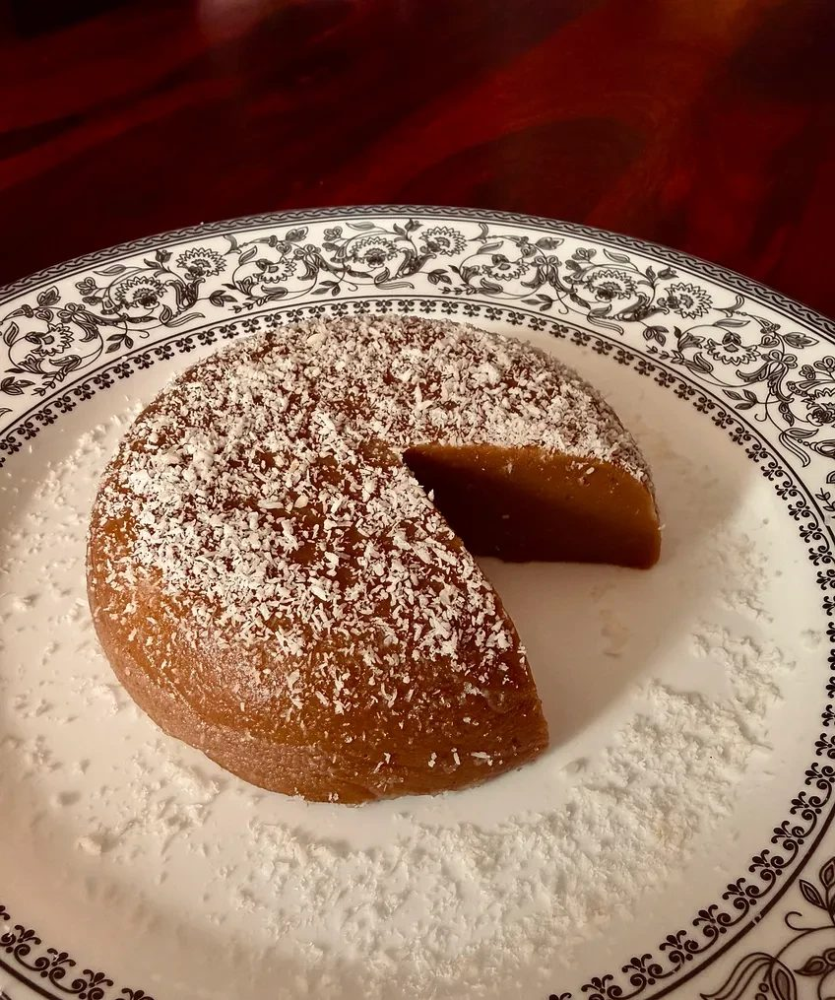
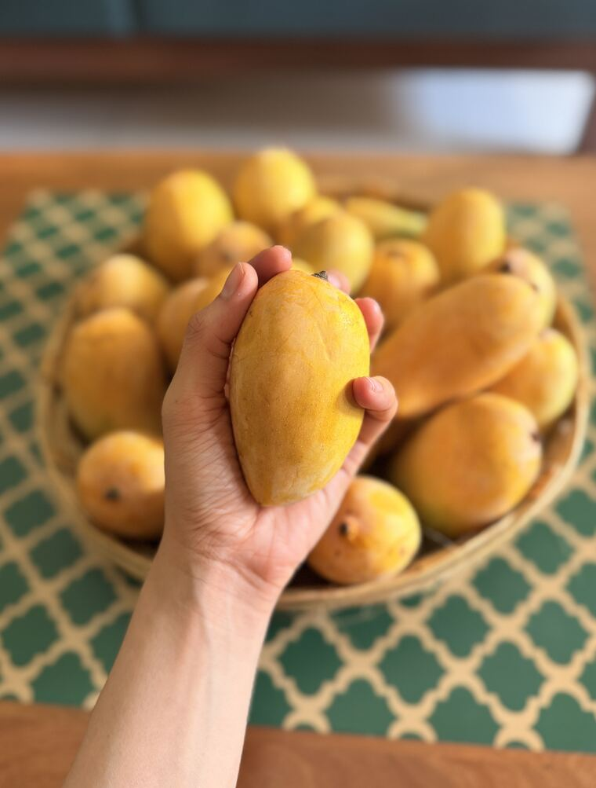

Published essays
- Oct 2026 Love in the time of convenience To exist is an inconvenience. Read ↗
-

"When one of the most intense languages of love disappears, feeling isolated and disconnected is inevitable."
- Sep 2026 How a satisfied person became a problem The strange comfort of always having something to chase. Read ↗
-
She wrote that a woman was best served by replacing what she owned at roughly the rate at which industry could improve it. She thought the European habit of buy once, buy well, never buy again was a failure of imagination.
- Sep 2026 You're not bored of the food. You're bored of the shape. On tacos, pizza, guilt and the art of eating. Read ↗
- Aug 2026 What if there's something better? It's safe to stop looking. Read ↗
- Aug 2026 An ancient cure for a modern manipulation The algorithm doesn't just take our attention, it standardizes our desires. Nyāya, India's school of logic, offers a defence. Read ↗
- Jul 2026 Since when did waiting become unacceptable? Waiting has a lot more to do with trust than patience. Read ↗
- Jul 2026 Since when did celebration belong to cake? Cakes feel ancient but they've barely spent a lifetime here. Read ↗
- Jun 2026 A veil for my hand Notes on why I eat with a spoon but would rather not. Read ↗
-

"I hold up the spoon as a veil for my hands so none of the food bleeds onto them."
- May 2026 What are we really gifting? Notes on what convenience took from gifting. Read ↗
- Apr 2026 The art of eating the same meals every day Notes on how my cook fights my rebellion. Read ↗
- Mar 2026 The rebellion of packing your own meal Notes on freedom, food, and travel. Read ↗
- Feb 2026 One teaspoon short of inheritance Notes on social conditioning and a mother's craft. Read ↗
- Feb 2026 When restraint feels like deprivation Notes on restraint, deprivation and reward culture. Read ↗
- Feb 2026 The girl with no ambition Notes on ambition, guilt and relief. Read ↗
- Sep 2022 In a world of infinite, celebrating small wins can make us happier The blessing of modest expectations. Read ↗
- Aug 2022 Are we free to choose? The lesser we need, the richer we are. Read ↗
- Jun 2022 Racing to the finish line with fast-food Comfort is in the fleeting moment of pleasure. Read ↗
- Apr 2022 In the day, we seek. At night, we discover. We are creatures of chaos; patterns help! Read ↗
- Oct 2021 Other people don't know what you know That's why they need context and concrete ideas. Read ↗
- Oct 2021 God and the devil are in the details “The details are not the details. They make the design.” Read ↗
- Oct 2021 Does information help when you are anxious? Hell, no! Hello, I make mistakes, nice to meet you! Read ↗
- Apr 2021 Implicit Bias: The why and how of unlearning and relearning parts of our belief system Can you ever be bias-free? Read ↗
- Oct 2020 When can mistakes breathe? Why bad design can enhance a culture that has no room for mistakes. Read ↗
There is always space for a second helping.
Subscribe to the newsletter.
Let's get your thoughts in shape
I write weekly newsletters for founders and practitioners in food and health who know more than they have time to write down.
Write to me at riddhitanna11@gmail.com
Tell me what you would have sent out this week if you had the time.